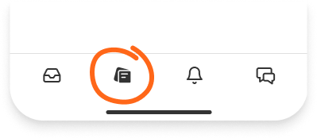

I just started Substack Notes and would love it if you joined me there! Here’s the first thread to prime you:
Notes is a new space on Substack for us to share links, short posts, quotes, photos, and more. I plan to use it for things that don’t fit in the newsletter, like work-in-progress or quick questions. In particular, I expect to “note” newsworthy tidbits there and use the forum to explore topics related to, but not necessarily aligned with, the Healing Earth newsletter.
As another motivation, Substack Notes has also become a target of Elon Musk as he continues his crusade to destroy value on another platform—I’m still on said platform as a zombie; I didn’t delete my account, but I’ve completely turned off alerts and deleted the app from my phone. I can check it whenever I want, but it’s a one-way street. It turns out that “whenever I want” is about once or twice a month, so it’s tolerable, primarily for checking links sent through other platforms. I’m also on both Mastodon and Post.news and will endeavor to cross-post there as this gets rolling.
How to join
Head to substack.com/notes or find the “Notes” tab in the Substack app. You'll automatically see my notes as a Healing the Earth with Technology subscriber. Feel free to like, reply, or share them around!

You can also share notes of your own. I hope this becomes a space where every reader of Healing the Earth with Technology can share thoughts, ideas, and interesting quotes from the things we’re reading on Substack and beyond.
You can always refer to the Notes FAQ for assistance if you encounter any issues. Looking forward to seeing you there!